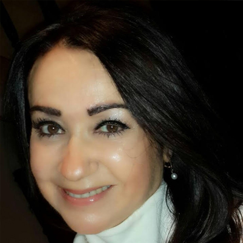
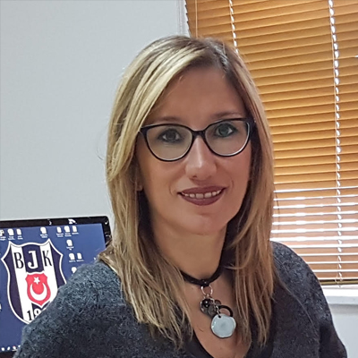
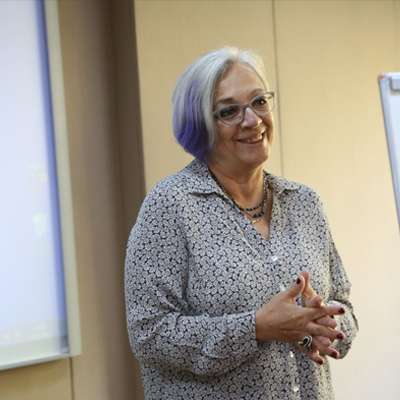

Toggle navigation
Anasayfa
ÖNEMLİ TARİHLER
Bildiriler
Yazım Kuralları
Bildiri Şablonu
Bildiri Yükleme
Kabul Edilen Bildiriler
Kongre Programı
Elektronik Bildiri Kitabı
Kurullar
Danışma Kurulu
Yürütme Kurulu
Sekreterya
Organizasyon
Kongre Kayıt
Konaklama ve Ulaşım
Sosyal Program
Gala Yemeği
Kongre Yeri
Atölye Çalışması
İletişim
Danışma Kurulu
Prof. Dr. Aşkın KESER
Prof. Dr. Ayşegül Asuman AKDOĞAN

Prof. Dr. Ayşe Çiğdem KIREL
Prof. Dr. Azize ERGENELİ
Prof. Dr. Azmi YALÇIN
Prof. Dr. Cavide UYARGİL

Prof. Dr. Deniz ELBER BÖRÜ
Prof. Dr. Dursun BİNGÖL
Prof. Dr. Enver ÖZKALP
Prof. Dr. Güler İSLAMOĞLU

Prof. Dr. İnci ERDEM ARTAN
Prof. Dr. Kadir ARDIÇ
Prof. Dr. Mahmut PAKSOY
Prof. Dr. H. Nejat BASIM
Prof. Dr. Ömür Nezcan ÖZMEN
Prof. Dr. Serpil AYTAÇ
Prof. Dr. Zeyyat SABUNCUOĞLU